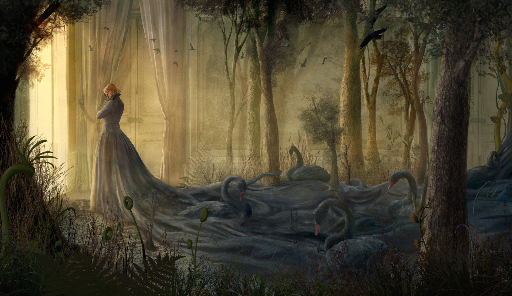
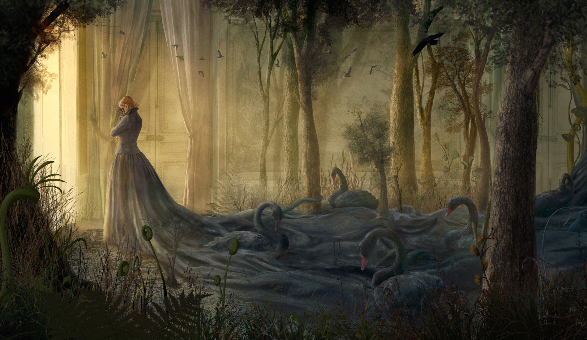

In the Shadows
Behind the palace's golden hues and lush interiors lie corners shrouded in shadow. These hidden spaces hold truths that don’t always resemble harmony or balance, leaving behind questions that beg to be answered.
She stands there, a woman, her form shifting and layered with mystery. Her heart, now a pear, is a symbol of loss—of her fragmented self in a world that has demanded too much.
Who is she? She could be any of us. Her transformations make us reflect on our own lives and the parts of ourselves we lose along the way. On her journey, she confronts the black swan, the keeper of her stolen heart, and meets mysterious beings who reflect her deepest fears and desires. In the quiet spaces between shadows, she begins to understand what she’s truly searching for: not just her heart, but the courage to embrace herself as she is.


 
